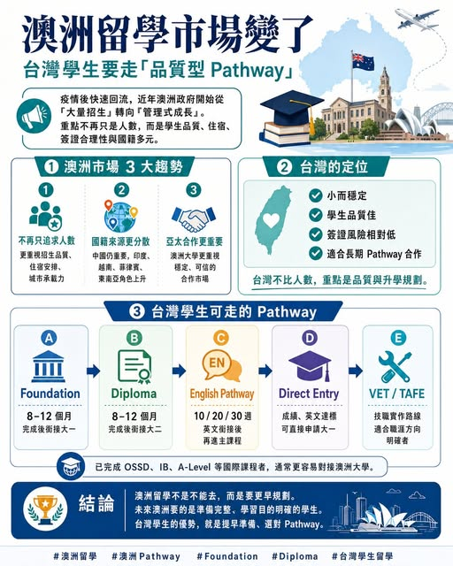

《看懂制度，選對世界》第一集
澳洲留學市場轉向：台灣學生機會上升中
疫情後，澳洲國際學生快速回流。到了 2025 到 2026，市場開始修正，政策焦點轉向學生品質、住宿、國籍多元、申請合理性。

【 留學市場轉向：台灣學生機會上升中 】 疫情後，澳洲國際學生快速回流。到了 2025 到 2026，市場開始修正，政策焦點轉向學生品質、住宿、國籍多元、申請合理性。 澳洲教育部資料顯示，2026 年 1 至 2 月，澳洲共有 622,043 名國際學生，較 2025 年同期下降
7.7%；但同期間高等教育仍成長 3%，英語課程 ELICOS 則下降 31%。這代表澳洲留學市場正在換方向。. 對台灣學生來說，這波變化反而帶來新機會。台灣市場規模雖小，卻常給人學習動機明確、申請資料完整、家庭支持度高的印象。對澳洲大學來說，這類學生來源很有吸引力。. 澳洲留學 3 大趨勢 1 招生思維轉向 過去看學生數量，現在更重視學生品質、住宿安排、學業完成率與簽證合理性。2 來源更加分散 中國仍是重要市場，印度、越南、菲律賓、孟加拉、東南亞學生角色上升。
澳洲大學正在降低單一國籍依賴， 3 亞太合作升溫 澳洲大學會更重視台灣這類「規模精準、學生品質佳、申請風險較低」的市場。. 台灣學生常見澳洲 Pathway Foundation｜銜接大一 適合高中畢業後，成績、英文或學術背景尚未達到澳洲大一門檻的學生。通常約 6 到 12 個月，完成後銜接合作大學大一。適合： 高中畢業生 想進澳洲大學但需要補強學術基礎 目標商科、工程、資訊、設計、健康科學等科系 . Diploma｜銜接大二 適合成績接近大學門檻，希望用更順暢方式進入澳洲大學的學生。
通常約 8 到 12 個月，完成後可銜接合作大學相關科系大二。常見領域： 商科 資訊科技 工程 傳播 設計 . English Pathway｜英文銜接 適合 IELTS 或英文成績差一點的學生。常見長度約 10 週、20 週、30 週，完成後再銜接 Foundation、Diploma 或 Bachelor。澳洲學生簽證目前採 Genuine Student 要求，申請人需要展現以學習為主要目的，並能說明課程選擇與未來規劃。. Direct Entry｜直接申請大一 適合成績與英文都達標的學生。
尤其是完成 OSSD、IB、A-Level 等國際課程者，通常更容易對接澳洲大學標準。. VET / TAFE｜技職型課程 適合職涯方向明確的學生，例如幼教、餐旅、商業、設計、資訊、社區服務等。這條路線要特別重視課程品質、後續銜接與簽證邏輯，避免單純因門檻較低而選擇。. 台灣學生的關鍵 澳洲留學市場正在從「人數競爭」走向「品質競爭」。對台灣學生來說，澳洲仍然值得考慮；對台灣教育機構來說，未來也可以成為澳洲大學在亞太地區的重要 Pathway 合作來源。. 結語 澳洲留學市場降溫，代表市場正在重新篩選學生來源。
台灣學生要掌握的方向很簡單： 先想好目標科系，再選 Foundation、Diploma、English Pathway、Direct Entry 或 VET / TAFE。澳洲市場改變後，台灣學生的機會，正在升溫。